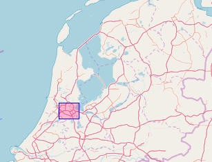
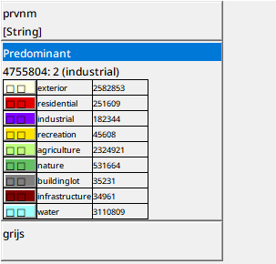
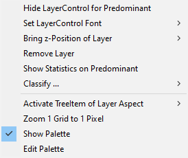

user-guide-geodms-gui - map-view legend
overview

The upper part of the legend presents an overview with a zoomed out extent of the contents of the configured background-layer. With the Toggle buttons (

 ), the overview and and legend view can be made (in)visible.
), the overview and and legend view can be made (in)visible.
legend

example of a legend with three layers
The legend of the map view has two functions:
- to inform the user on the layers in the map view, including classification and palette and the value of a highlighted element in the map. In the example the colors are used to indiciate each class. The two squares in each colored box indicates the layer is a grid layer. For polygon layers, two circles are used. For arc layers, a line symbol and for point layer the configured or default symbol (house) is used.
- to activate layer specific functionality of the layers in the map view.
With the right mouse click on a layer, a pop-up menu is activated:
menu

The following options are available:
- Hide LayerControl for layer The layer is not visualized in the legend (e.g. background layers can be made hidden when exporting a legend). A right mouse click on the layer control on an empty area offers the option to make the hidden layers visible again.
- Set LayerControl Font: Three options are available for the size of the layer font in the legend. The default option is small. The user can set the font size to medium or large.
- Bring z-Position of Layer: The sequence of layers in the legend corresponds to the drawing order in the map view. This order can be changed with the four submenu options. Grid layers drawn above other layers are visualized transparently. Only the relevant submenu actions are enabled for the user:
- To Top: The layer will be drawn above all other layers. In the legend, the layer is moved to the top. The option is only available in case the layer is not yet the top layer in the drawing order.
- To Bottom: All other layers will be drawn above this layer. In the legend, the layer is moved to the bottom. The option is only available in case the layer is not yet the last layer in the drawing order.
- Up: The layer is positioned one step higher in the draw order. In the legend, the layer is moved one place higher. The option is only available in case the layer is not yet the top layer in the drawing order.
- Down: The layer is positioned one step lower in the draw order. In the legend, the layer is moved one place lower. The option is only available in case the layer is not yet the last layer in the drawing order. The sequence can also be adapted for dragging and dropping the layer.
- Remove layer: The layer is removed from the map view.
Based on the type of layer some additional layer specific options are available:
- Show Statistics on layer: presents a Windows with the same statistics as presented in the Statistics Window from the View menu.
- Classify …: if one or more classifications are available for the data-item in the layer, these are presented here. The user can select from the relevant classifications.
- Activate TreeItem of Layer Aspect: for each aspect the corresponding tree-item with the thematic data and, if used, class breaks and aspect values can be activated in the treeview. The submenu’s present the items with relevant aspects and items and their parents. With a left mouse click, the requested item becomes activated.
- Select SubLayer(s), (not for grid layers); the different style aspects used to draw a layer can be activated separately. The style aspects differ for the different layers types. Therefore, the set of submenu options differ per layer type. A indicates a style aspect is active (visible). For polygon and point layers, labels can be activated with the Select SubLayer > Label > Visible menu option.
- Zoom 1 Grid to 1 Pixel (only for grid layers): The layer is zoomed to the level at which each grid cell corresponds to one pixel. This is often the most elegant level to present a grid. For background-layer this option can be used to zoom to the level at which the layer is rendered.
- Show Palette (only in case a palette item is used for visualization): This option toggles between showing and hiding the palette and label information in the legend of the classification scheme used for the data item. A checkmark before the menu option indicates the information is shown.
- Edit Palette This option activates the classification-and-palette-editor to edit the classification/palette used to draw the layer.